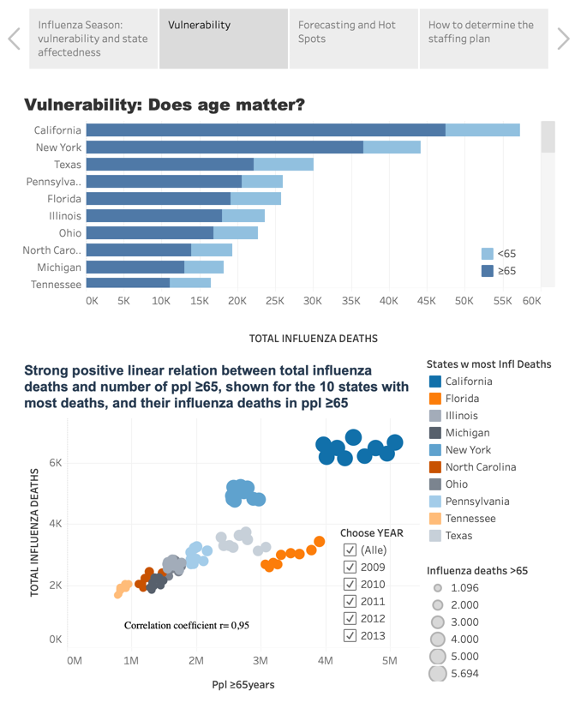
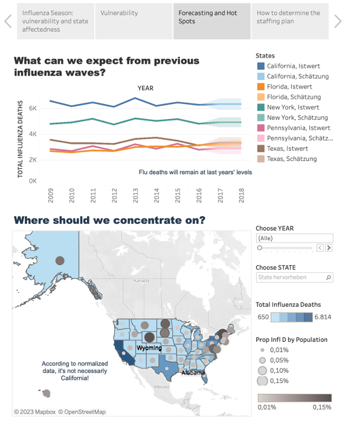
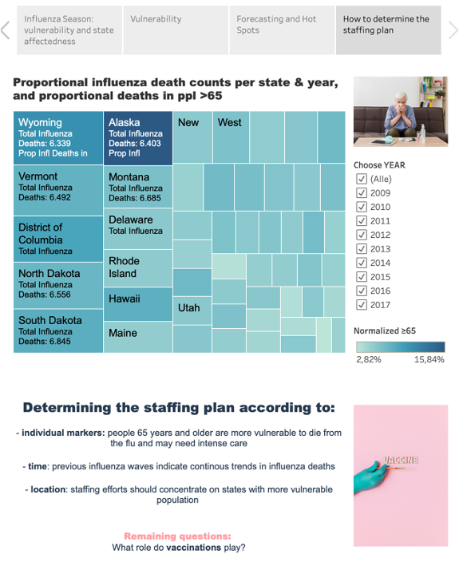

Preparing for Influenza Season
The project helped a medical staffing agency that provides temporary workers to clinics and hospitals on an as-needed basis. The analysis helped plan for influenza season, a time when additional staff are in high demand. The final results examined trends in influenza and how they can be used to proactively plan for staffing needs across the country. Here, I drawed statistical insights from joining two datasets with Excel and finalized an interim report containing the details of the analyses. In a second step, I visualized insights in a Tableau dashboard, which has been used for a final stakeholder presentation.
Objective:
Key Business Questions:
- Staffing plan informing timing and spatial distribution of medical personnel throughout the US
- Seasonality
- Low-, medium-, or high-need states based on vulnerable population count
Find the Tableau dashboard here:
The dataset
Population Data by Geography US Census Data: Population numbers per county (2009-2017), owned by US Census BureauProcedures:
- Excel:
- Data preparation
- Grouping, summarizing data
- Descriptive analysis
- Forecasting
- Hypothesis testing
- Tableau Dashboard
Analyses & Results:
- Median split for both age groups.
- Group comparison: t-Test
(two-sample assuming unequal variances, α = 0.05)
At an alpha of 0.05 or confidence level of 95 percent, differences in flu death rate proportions are due to states having higher proportions of children < 5y.
Other than expected, states with higher proportions of children < 5y tend to have lower proportions of flu death rates.



